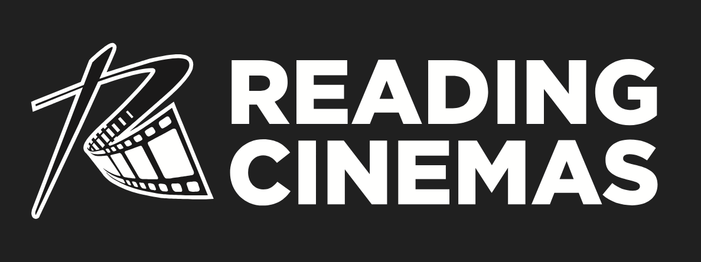

Strategic recommendations for real companies, built from public information.
Each report identifies revenue and growth opportunities through structured analysis of operations, competitive position, and market context. The findings are then developed into practical recommendations and ideas worth exploring.


Strategy Lab started from something I already tend to do: notice a business, wonder why something works the way it does, and then start digging into it. For each project, I pick a real company and look at what I can learn from publicly available information, including the business, its customers, competitors and the wider market.
The goal is to work through where there could be an opportunity to improve something, grow revenue or try something new. I don’t have access to the company’s internal data, so these are not final answers; they are an outside view of what I think could be worth exploring, supported by the research I can access.
I start by understanding the business, its customers, competitors and what’s happening around it.
Then I look for where there could be an opportunity to improve something, grow revenue or do something differently.
From there, I work the findings into recommendations and, where it makes sense, concepts or prototypes.
The full thinking, research and recommendations behind the project.
A deeper look at a customer, market or opportunity when it needs more digging.
Ideas that show what a recommendation could actually look like in practice.
A more tangible version of an idea so it can be seen, clicked through or understood properly.
I’m a Business Analyst who likes taking a problem, pulling it apart and working out what could be done better. A lot of my work sits across strategy, research, data and technology, but the part I enjoy most is turning an observation or problem into something practical.
Strategy Lab is also a way for me to put that thinking into practice on companies and industries I find interesting.